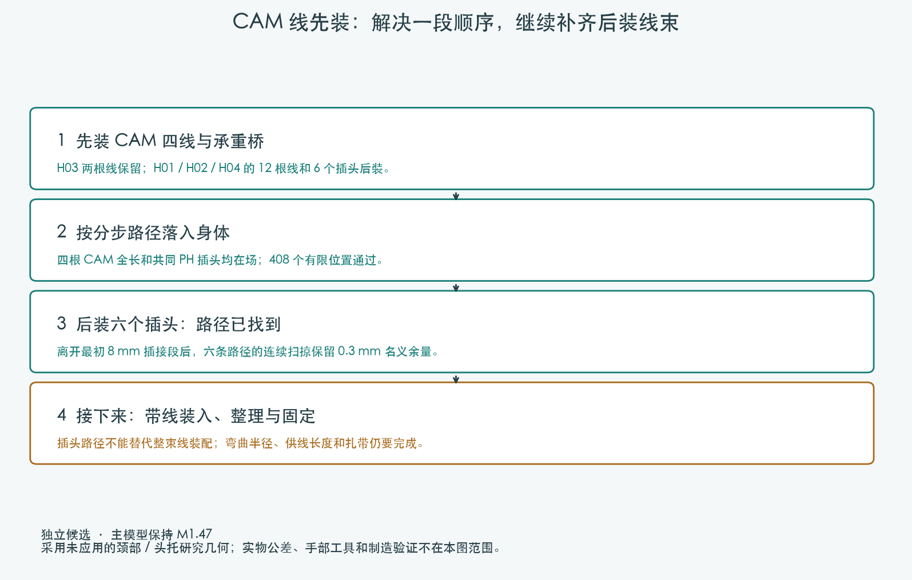
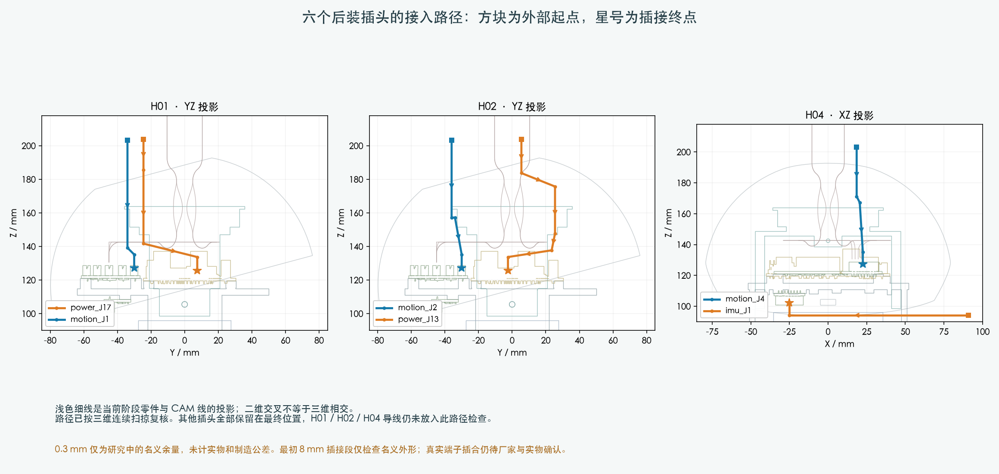

独立装配研究 · 未应用主模型
线长复核：H02先装，继续补齐带线工序
完整带线装配仍未完成。后装导线、临时线尾、扎带、手部工具和供应商裁线图继续处理；这次没有更改打印结构或电路板。
后续复核：H02先装，H01/H04继续处理
加上现有名义线长，H02与H04的原裸插头路径出现长度不足。H02改为更低的两线候选，在开敞机身内提前连接；两端插头与完整线形的201个装入位置、随后的408个身体位置和130个头部姿态通过。打印件与接口保持，完整线束仍未完成。
查看新走向和线长复核。H01/H04的10根后装导线、人手工具、固定与其他线束继续处理；参考线长不能用于裁线。
前一轮工序和六个裸插头路径（对照）
前一轮：三组线全部后装
CAM 四根全长、共同 PH 插头与承重桥先装，H03 两根线保留。H01 / H02 / H04 的 12 根线和 6 个插头后装；122 件阶段源部件均参与检查。

| 动作 | 有限位置 | 结果 |
|---|
| 桥移动，上壳保持 | 37 | PASS |
| 共同后移 | 57 | PASS |
| 提起至装配台 | 253 | PASS |
| 上壳回位 | 61 | PASS |
共408个有限位置通过；身体动作尚非连续验证。使用未应用的颈部与头托候选，主模型 M1.47 保持。
六个后装插头可绕行接入
其他插头保持最终位置，四根 CAM 线和 H03 导线也保留。六条自由移动路径的连续扫掠均通过0.3mm名义余量检查及结果复核；最初8mm插接段仅检查名义外形。

插头空间分配仍为 ASSUMED。本轮未把后装的12根导线附在移动插头上，不能据此认定整束线已经能装进去。